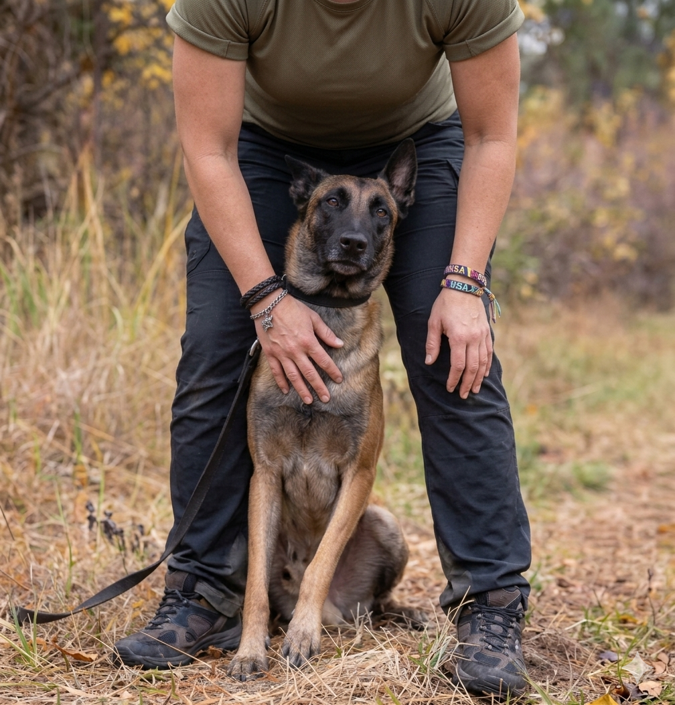

Diana Ramos Rodrigo
Estudiante de 2do Año de Ingeniería de Sistemas en la UNSA.
Apasionada por la ciberseguridad y la criptografía.
Habilidades Técnicas
☕ Java
🐍 Python
🐧 Linux
🐳 Docker
📊 SQL
Pasatiempos
🎬 Cine Animado
🎭 Musicales
🐕 Cachorros
🍰 Repostería